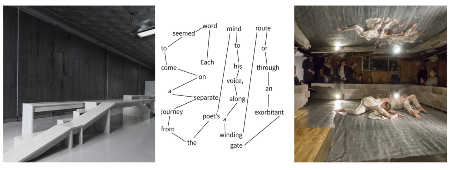

Choreographic Place
On View February 21 – March 15, 2026
Opening Reception Sunday, February 22nd, 1-4 pm
Choreographic Place is an exhibition program presented by Bridge, premiering at the Evanston Art Center, that explores the evolving relationships between dance, sculpture, movement, written choreography, and civic space through the framework of William Forsy the’s notion of “choreographic objects”. Bridge collective members Michelle Kranicke, David Sundry and Michael Workman seek to expand the definition to architectural or sculptural forms designed not simply to occupy space, but to shape how bodies move, and behaviors may be regulated within it, how choreography is written and read, and how movement is negotiated collectively in shared environments.
Developed in collaboration with architect David Sundry and Zephyr director Michelle Kranicke, Choreographic Place positions the large-scale sculptural forms of Sundry’s installations as both stand-alone artworks and active performance environments that prompt, constrain, and inspire new ways of moving. Over the past two decades, Sundry, working closely with Kranicke, has produced a series of architectural-scale constructions that restrict, restrain, and otherwise challenge the body’s navigation through space. These objects, often mistaken for stage sets, are in fact sculptural installations whose full meaning emerges only through interaction with performers, choreographers, and audiences alike.
The exhibition showcases the breadth of Sundry’s practice through a gallery-wide installation created specifically for the Evanston Art Center. The construction incorporates aspects of Sundry’s practice, showcasing the work as a visually compelling art object while tracing its development as a collaborator in choreographic creation. The installation is supported by 2D architectural drawings, process materials, and documentation of previous constructions and their relationship to performance and viewer interaction.
Additionally, Michael Workman presents written choreography conceived as an instructional text to guide and challenge visitors in how to negotiate the environments themselves. Choreographic Place also features restaged and newly developed movement works by Zephyr, associated artists, and partner companies. Conceived as both a choreographic and civic research platform, Choreographic Place serves as a site for structured experiments in which dancers, musicians, writers, and the public explore how spatial constraints, sculptural interventions, and textual prompts can generate new improvisational vocabularies and shared embodied experiences.
Choreographic Place also launches Instructions for Living, a folio of performance scores by Workman, with this section created in dialogue with Kranicke and Sundry, serving as both an archive and a public tool for movement-based exploration.
David Sundry is a licensed architect and builder. He is the founder and president of Triple O Construction and O Group Inc, its partnering architecture studio. His buildings have been featured in The Wall Street Journal, Chicago Magazine, ChicagoSocial, and Better Homes and Gardens. His renovation of a historic 1951 convent designed by Belli & Belli was part of the exhibition Outside the Box: Modern and Contemporary Houses presented at the Riverside Arts Center. Sundry is co-director of SITE/less performance space. Additional commissions include an experimental music and performative sound sculpture installation at Augustana Lutheran Church and a steel-fabricated information kiosk in Perez Plaza. His writing has been published in the journal Bridge, NFP, where he serves as architectural editor.